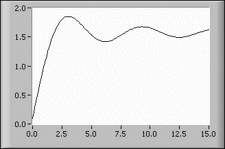

Sine Integral VI
Owning Palette: Exponential Integrals VIs
Requires: Full Development System
Evaluates the sine integral for any real number x.
 Add to the block diagram Add to the block diagram |
 Find on the palette Find on the palette |
Owning Palette: Exponential Integrals VIs
Requires: Full Development System
Evaluates the sine integral for any real number x.
| Add to the block diagram |
Find on the palette |
 |
x is any real number. |
 |
Si(x) is the result of the calculation of the sine integral for the given value of x. |
The following equation defines the sine integral.
where Si is the sine integral.
The following illustration shows the graph of the sine integral in the interval (0, 15).
